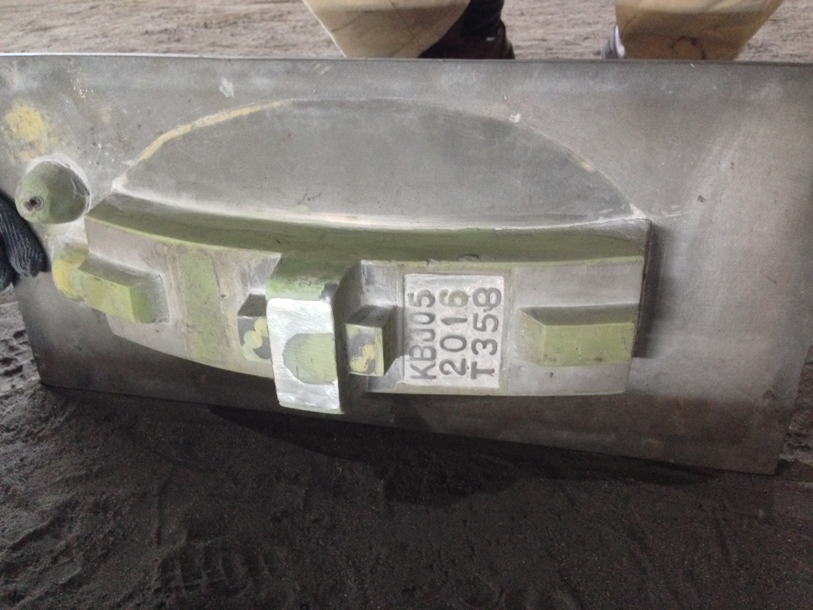
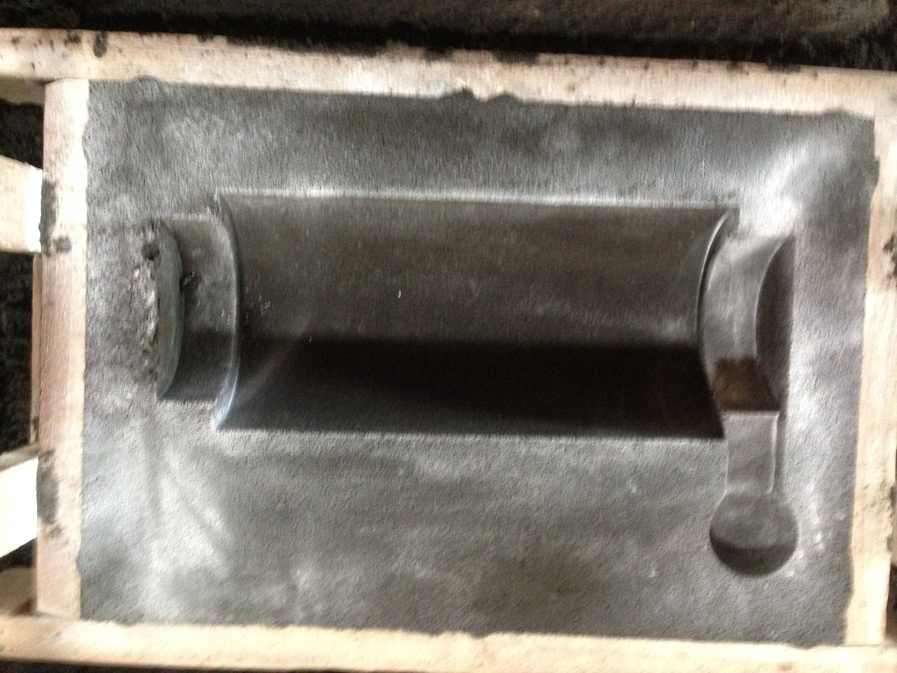
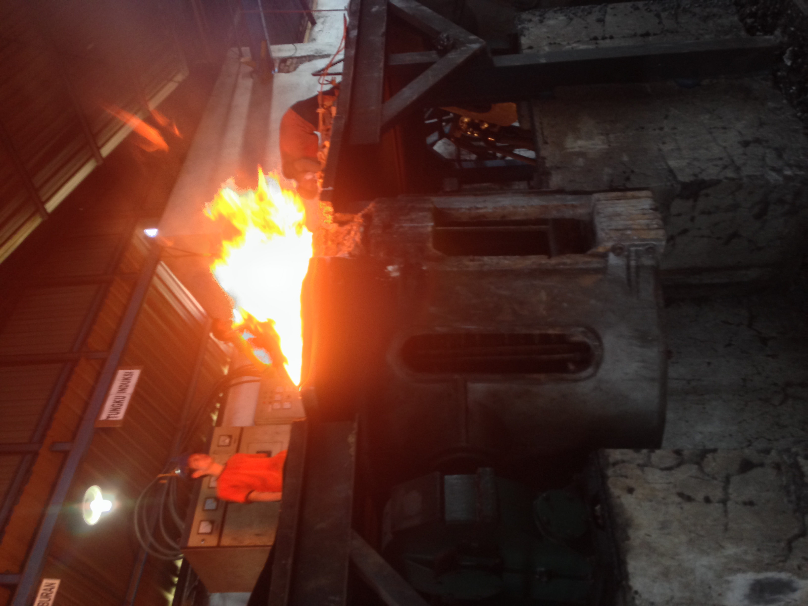
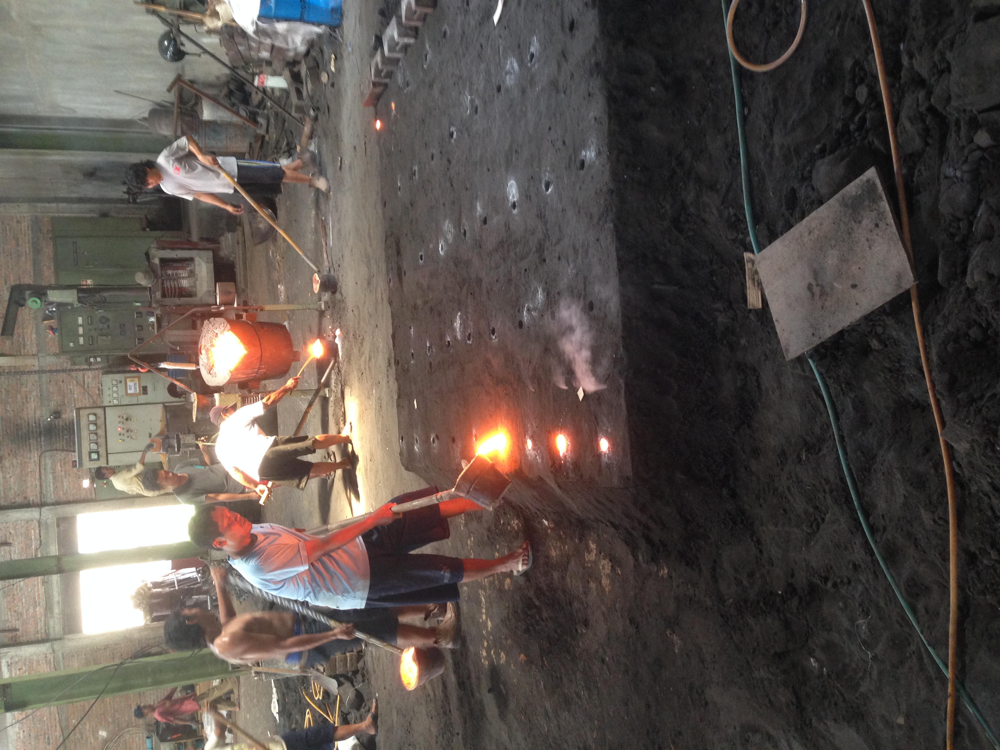
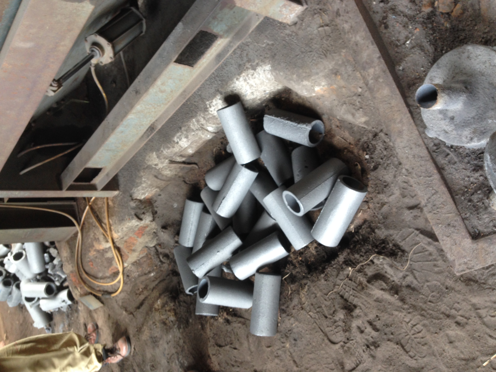

- Pola Logam
- Cetakan Pasir
- Peleburan Logam
- Pouring
- Casting

Pola adalah suatu alat menyerupai benda asli yang berfungsi sebagai alat untuk mencetak pada pasir cetak.

Cetakan Merupakan merupakan media yang digunakan untuk membuat bentuk coran sesuai keinginan. Pada bagian cetakan ini akan membutuhkan pola yang sudah dibuat sesuai keinginan untuk membuat rongga pada cetakan yang nantinya akan diisi oleh cairan logam.

Peleburan Logam adalah proses melebur logam dengan suhu di atas titik lebur untuk mencairkan logam yang nantinya akan dituang kedalam cetakan pasir.

Pouring adalah penuangan cairan logam ke dalam cetakan pasir menggunakan ladel dan biasanya dilakukan secara manual oleh pekerja.

Casting adalah benda cor hasil dari proses mencetak yang rongga dalamnya sudah diisi oleh cairan logam. Pembekuan sempurna cairan logam untuk Besi Cor biasanya 1 x 24 jam.